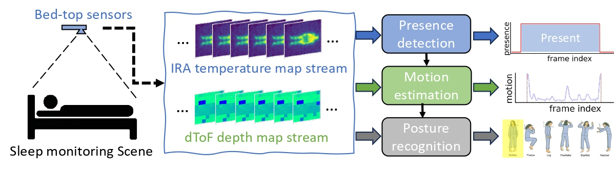
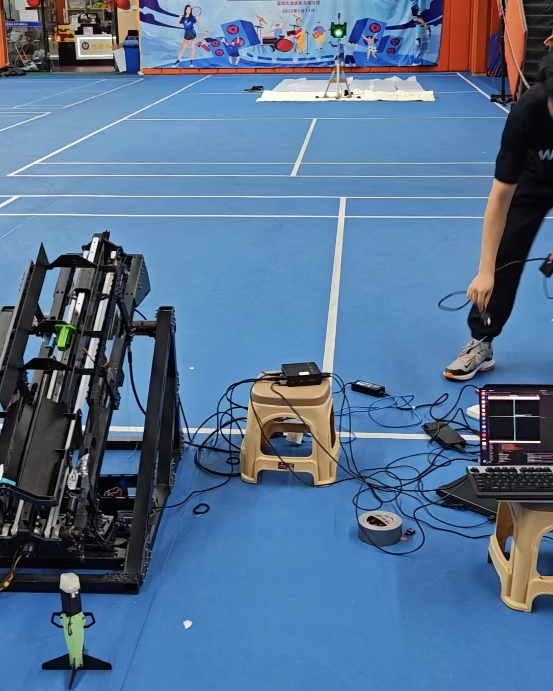

Myrmecos' Homepage
A brief intro
Hi! This is Nick, a year-four undergrad studying Computer Science at HKU!Thank you for browsing my webpage - ̗̀ ෆ( ˶'ᵕ'˶)ෆ ̖́-
I'm currently working in Professor Chenshu Wu's lab as a student RA on privacy-protecting camera.
I am working on privacy-preserving human sensing. I have also done several small projects of online courses.
You can check out my github page for them! ( •̀∀•́ )
It's right here!
My project: multi-modal thermal sensing
Sleep is a vital physiological indicator, so sleep monitoring is a very important task! Sleep motion and postures are two of the important factors that indicate our sleep quality. For clinical application, we use polysomnography (PSG), but they are very bulky, very expensive, and require specialized personel. Can we have more comfortable sleep monitoring experience? Sure! That is what we are trying to do: using thermal arrays for privacy-preserving, non-contact sleep monitoring at home! Thermal array-based monitoring has several challengings, such as low resolution, bedding occlusion, and heat residual. We leverage the fusion of a thermal array and a direct ToF sensor fusion to obtain a 3D human profile. We use a random forest classifier for presence prediction, state machine to stabilize the presence detection, and a lightweight ResNet-18 for posture prediction. You can check out my paper here! Project I participated in: human point cloud generation based on thermal maps
Thermal cameras and thermal arrays can capture the intensity of thermal radiation, which depends on three major factors: target object temperature, emissivity and object distance. It happens that human have relatively fixed temperature and emissivity, and therefore, it is possible to estimate human distance (according to HKU AIoT's TADAR) We want to obtain more fine-grain distance, so we attempt to reconstruct a human point cloud from thermal image! We leverage an inverse multi-primitive solver, a forward physical model, and geometric perspective fusion to make this possible. This paper is currently under one-shot revision for MobiCom.RoboMaster Dart target finding algorithm
During DJI's RoboMaster competition (RMUC), dart launch station is an important element. Basically, we need to hit a target co-located with a green light. The problem now is to calculate the position and direction of dart launch station relative to the target. It is easy to find green light on a camera but challenging to find the 3D position. Conversely, it is easy to get 3D position given some 3D points but difficult to get light color information. We achieve the task of finding green light 3D position by aligning the camera with the LiDAR using HKU MARS Lab's lidar-camera calibration utilities. We then project a line from the aligned point cloud towards the green light direction, and filter the points alone the line to find the target points around the light. The code is now open-source here  This image shows how we tested our dart station. The NUC to the right is what I use to run dart station code.Extracurricular interests
I used to work as a student RA at Professor Guenard's ant lab!Though I'm no longer working with insects, I'm still really interested in any crawling critters! I can say I'm more or less familiar with Hong Kong's local ants, freshwater/mangrove/beach crabs, and somewhat familiar with common local birds. Also, I participated in an ant survey in Fujian in 2023 summer, and co-authored a paper about Protanilla ( •̀∀•́ ) You can check it out here: New insignts into the diversity and distribution of Leptanillinae within China Also, I have been organizing herping activities in my student hall (Wei Lun Hall) and made a guide to some common reptiles, amphibians etc. around the region. You can check it out: activity record.